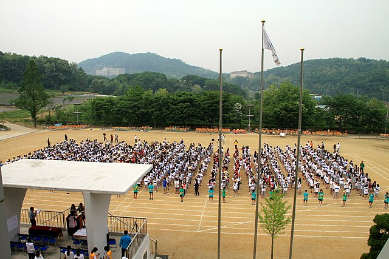

National Sports Day (taiiku no hi), later renamed to Sports Day (supōtsu no hi), is held on the second Monday of October to promote an active and healthy lifestyle. The holiday was established as a way to celebrate the opening of the 1964 Summer Olympics that was held in Tokyo. The first National Sports Day was held on October 10, 1966, two years after the Summer Olympics. In 2000, the holiday was moved to the second Monday in October. This was due to the Happy Monday System that modified to the Japanese law in both 1998 and 2001. This system set aside laws to move national holidays to Mondays, allowing for three-day weekends.